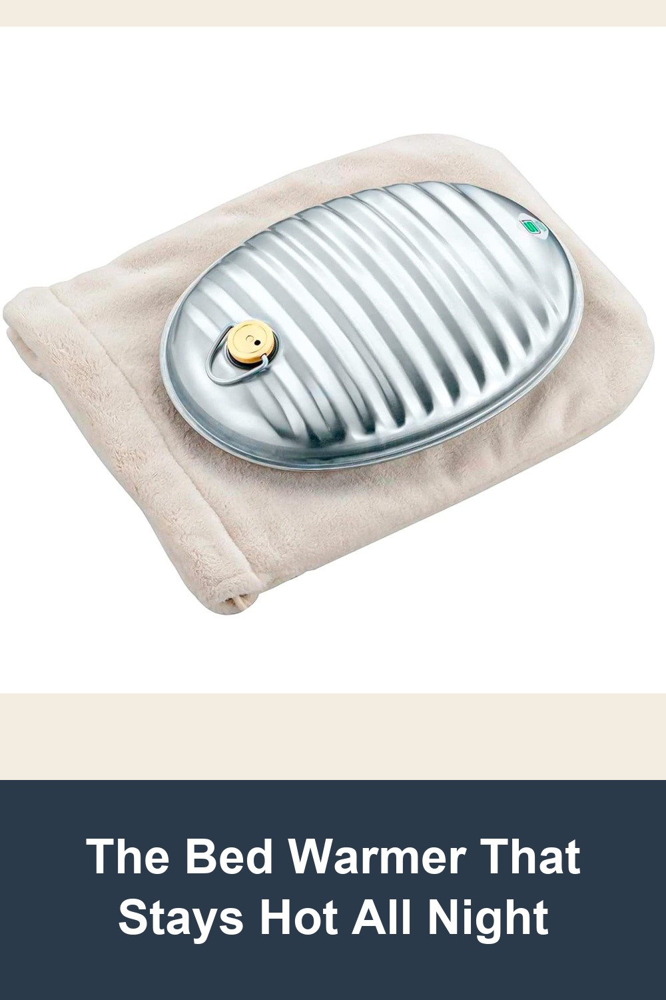
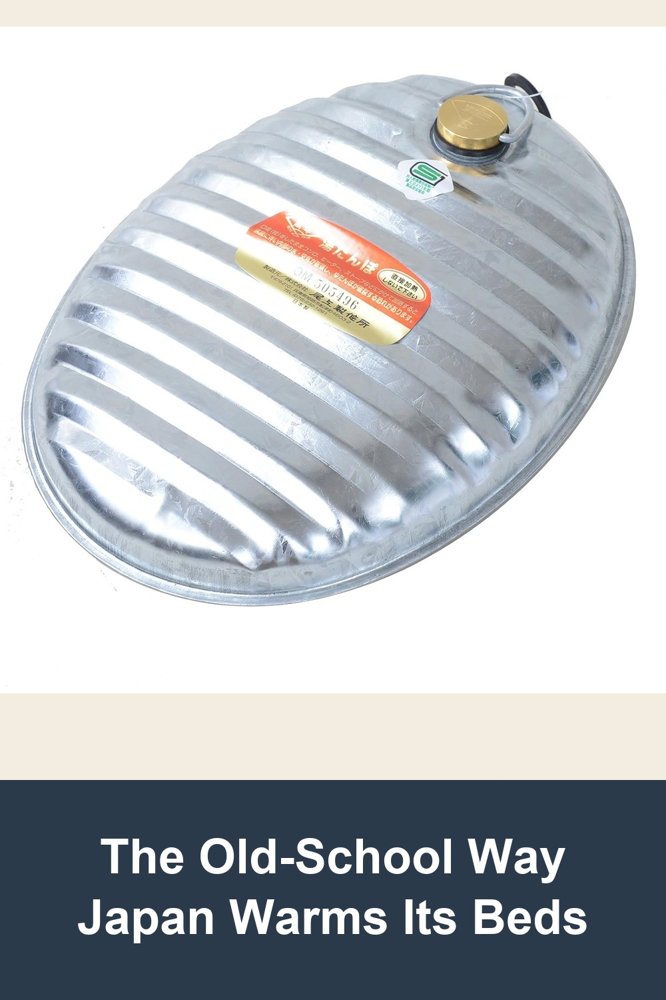
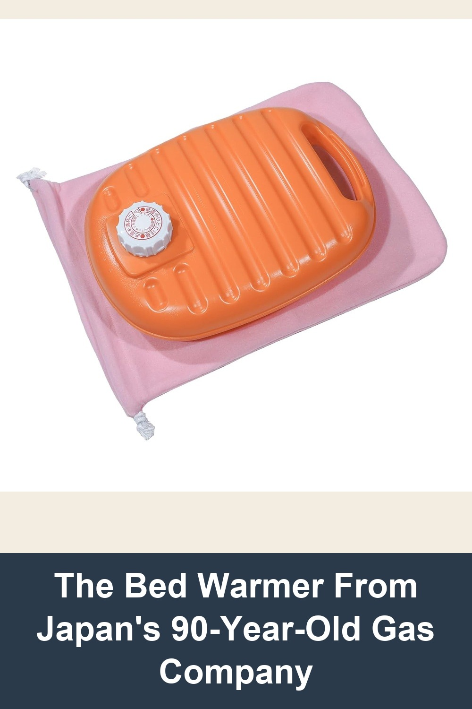

Maruka 022524 Hot Water Bottle A Ace 0.8 gal (2.5 L) with Bag
Fill it with hot water, tuck it under the covers — this galvanized steel yutanpo made in Japan radiates warmth for hours longer than a plastic or rubber bottle. Comes with a soft carrying bag and a spare gasket.
It's a really great hot water bottle. In winter, I'll fill it up at night to put at the foot of my bed, and it's always still warm by morning. The metal hot water bottles just stay warm so much longer.— verified Amazon buyer
View on Amazon →
Man-nen Tin Hot-water Bottle (Japan Import)
Fill it with hot water and slip it into bed — this traditional tin yutanpo from ONOE, one of Japan's oldest metal-goods makers, holds heat for hours with no rubber smell and no splitting, just a heavy tin bottle built to outlast anything plastic.
I fill it with piping hot water and wrap it in a handmade hot water bottle cover and keep it in bed with me all night, and in the morning it is STILL WARM. I have never have to deal with having just my feet be warm and the rest of me be chilly like when I've used rubber water bottles.— verified Amazon buyer
View on Amazon →
Iwatani Japanese Premium Hot Water Bottle with Soft Fleece Cover - 2.8L
Fill it with hot water and tuck it under the covers — this large-capacity plastic yutanpo from Iwatani, the Japanese company behind portable gas stoves for over 90 years, is rigid, leak-proof, and comes with a soft pink fleece cover for direct skin contact.
My feet were too cold in bed so I bought this. It's truly amazing like other people said in reviews. The bottle keeps the hot water till next night!!! I love love love this Japanese product!!!— verified Amazon buyer
View on Amazon →